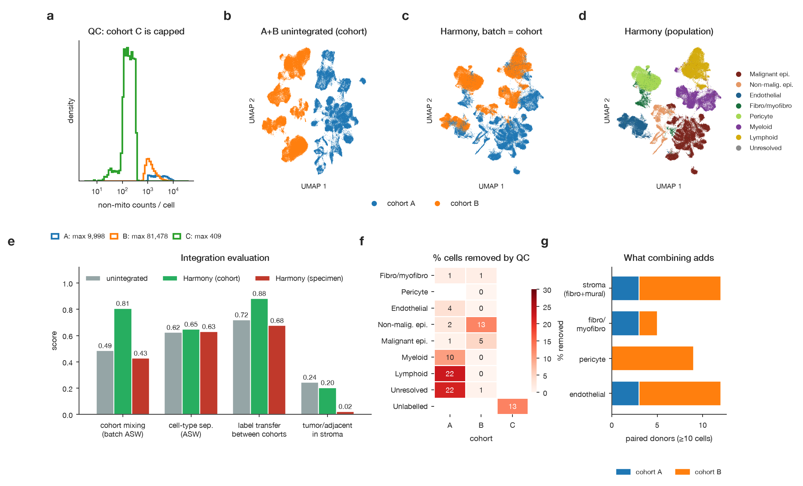
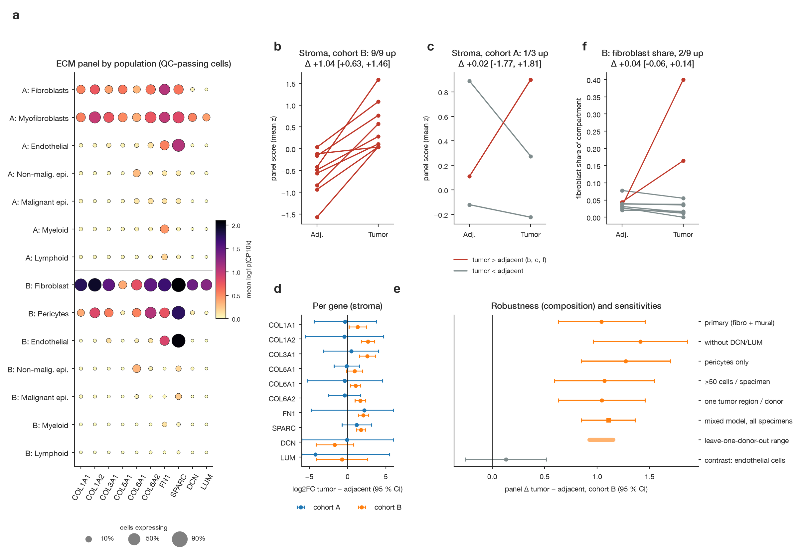
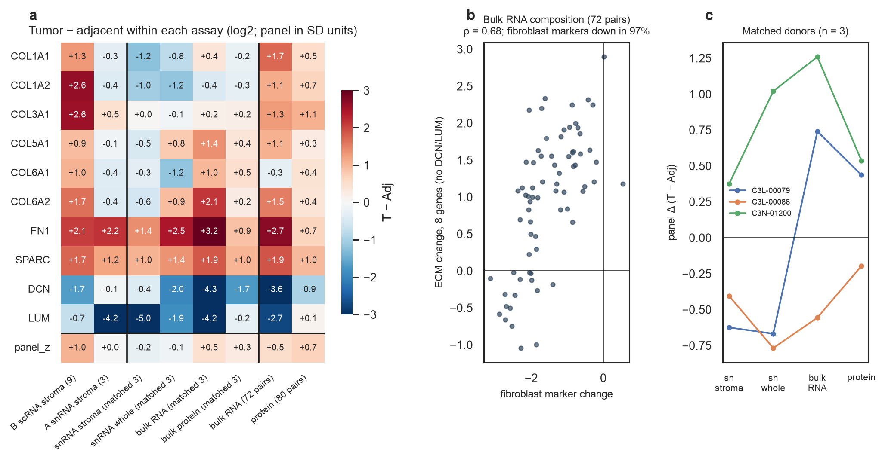

Loading and reconciliation. Cohort A raw droplet matrices were restricted to the 141,950 author-annotated nuclei (34 specimens; every annotation matched); B (157,881 cells, 26 specimens) and C (29,499 cells, 13 specimens) were loaded in full. Per-specimen counts equal the package manifest. Genes were matched by Ensembl ID (A, C) and unique symbol (B; 532 symbols that are old and new names of the same gene were left out): 29,531 genes are shared, including all 10 panel genes. The suggested label guide maps A "TRM" to lymphoid; these 510 nuclei express CSF1R (50 %, as macrophages) but not CD3D/E, CD2 or CD8A (≤2 %), so they were remapped to myeloid.
QC criteria. Flags were set per specimen and per assay rather than with global cut-offs: counts/genes < median − 5 MAD, counts > median + 5 MAD, mitochondrial fraction > median + 3 MAD and >5 % in nuclei (where mitochondrial reads indicate ambient RNA) or >25 % in whole kidney cells, plus Scrublet doublets. A and B were already author-filtered (B's QC fields match our recomputation exactly); flagged cells were removed (A 4.2 %, B 0.9 %; ≤4 % in stroma and endothelium; no specimen removed). Cohort C was excluded: every cell has ≤409 non-mitochondrial counts (A and B reach 104–105; Fig. 1a), 76 % of its reads are mitochondrial, its two worst specimens are the tumors of two of its four paired donors, and DCN/LUM are detected in 0.2 % of cells. A marker-based labelling validated on A and B (81 %/95 % agreement with author labels) still recovers broad populations in C, but per-cell ECM signal is too sparse.
Baseline vs integration. On a stratified subsample (87,489 cells: ≤1,000 per specimen plus every stromal and endothelial cell) the unintegrated A+B embedding separates by cohort (Fig. 1b); whole-specimen pseudobulk PCA confirms that cohort (single-nucleus vs single-cell) explains 83 % of variance. Harmony with batch = cohort (Fig. 1c,d) raised within-population cohort mixing (batch ASW 0.49→0.81), cell-type separation (0.62→0.65) and cross-cohort kNN label transfer (balanced accuracy 0.72→0.88), and kept the tumor/adjacent structure within stroma (0.24→0.20). Harmony with batch = specimen erased that structure (0.02), because specimen is confounded with condition, and was rejected (Fig. 1e). Preserved: all major populations (kNN purity 0.89–1.00) and within-population condition structure. Weakened: the malignant/non-malignant epithelial boundary across cohorts and global mixing, which stays low because the cohorts differ in composition (A mostly tumor nuclei, B mostly immune cells) and assay. What combining adds: after Harmony, A's labels predict 99 % of B's fibroblast and pericyte cells as stroma (69 % unintegrated), supporting one stromal compartment across cohorts, and paired donors for that compartment rise from 3 to 12 (Fig. 1f). The embedding was used only for visualisation and label transfer; no test uses it. (A harmonypy 2.1.0 release silently stopped after one iteration; version 0.0.10 was pinned and a test guards against a no-op correction.)

Overview and summary. In both cohorts the stromal compartment has the highest expression of every panel gene (Fig. 2a); endothelial cells express SPARC and FN1 but few collagens and no DCN/LUM; immune and epithelial cells are low. Within stroma, DCN and LUM are fibroblast-specific (high in B fibroblasts, near zero in B pericytes and in A "fibroblasts", which by non-panel markers RGS5, NOTCH3 and PDGFRB are largely mural cells). As the panel summary we use the mean of per-gene z-scored log2-CPM (z within cohort and population): genes co-vary across stromal pseudobulks (median pairwise ρ 0.48 in A, 0.70 in B) and the score agrees with PC1 (ρ 1.00/0.97) and log summed CPM (0.96/0.98), so the simplest equal-weight score is used; DCN and LUM, which do not co-vary with the rest in B, are always reported separately.
Population choice. The combined fibroblast + mural compartment (A fibroblasts and myofibroblasts; B fibroblasts and pericytes) expresses the panel most strongly, is supported as one compartment by non-panel markers and label transfer, and has 3 + 9 paired donors with ≥10 cells. Fibroblasts alone have 5 pairs (2 in B); endothelium has 12 pairs but expresses mainly SPARC/FN1 and is used as a contrast. Malignant cells have no adjacent counterpart and were not tested.
Testing. Values tested are pseudobulk raw counts of QC-passing compartment cells per specimen, converted to log2-CPM with library size from all genes; specimens with <10 compartment cells are dropped. Donors are the replicates: repeated tumor regions are averaged per donor and each donor's tumor is compared with its own adjacent sample. Per cohort we report the mean paired difference, 95 % t-interval, direction count and an exact sign-flip p (all 2n sign patterns; with n = 3 the smallest possible p is 0.25), with Benjamini–Hochberg correction over genes; cohorts are combined by random-effects meta-analysis.
| Stromal compartment, tumor − adjacent | Paired donors | Panel score (SD) [95 % CI] | Donors up | Sign-flip p |
|---|---|---|---|---|
| Cohort B (single-cell) | 9 | +1.04 [+0.63, +1.46] | 9/9 | 0.004 |
| Cohort A (single-nucleus) | 3 | +0.02 [−1.77, +1.81] | 1/3 | 1.0 |
| A + B, random effects | 12 | +0.60 [−0.39, +1.59]; I² = 80 % | 10/12 | — |
Observations. In B, COL1A2, COL3A1, FN1 and SPARC rise in all 9 donors (log2FC +1.7 to +2.6, q = 0.01) and COL1A1, COL6A1 and COL6A2 also rise (q ≤ 0.03); DCN and LUM do not (−1.7 and −0.7, q ≥ 0.17) and vary by ±5 log2 units between donors (Fig. 2d), consistent with their source being the ~3 % of B's compartment that is fibroblasts. A shows no consistent direction (Fig. 2c) and stays null in a mixed model using all 24 donors and 32 specimens (−0.18 [−0.85, +0.48]). Adding cohort A does not strengthen the B finding; it exposes between-cohort disagreement (I² = 80 %), and the pooled interval includes zero.
Robustness check (main uncertainty: compartment composition). If the B effect reflected more fibroblasts in tumor stroma, it should vanish in pure mural cells and without the fibroblast genes, and the fibroblast share should rise. It does not: pericytes only +1.27 [+0.85, +1.70], 9/9 up; panel without DCN/LUM +1.41 [+0.96, +1.86], 9/9 up; fibroblast share tumor − adjacent +0.04 [−0.06, +0.14] (Fig. 2e). The estimate is also stable with ≥50 cells (+1.07), one tumor region per donor (+1.04), a donor random-intercept model on all specimens (+1.11 [+0.85, +1.36]) and leave-one-donor-out (+0.93 to +1.15). Endothelial cells show no change (+0.13 [−0.26, +0.52]), so this is not a global shift in ECM transcripts.
Interpretation. In single-cell data, tumor-associated mural/pericyte cells carry more fibrillar collagen, FN1 and SPARC transcript than adjacent ones in the same patients. Higher transcript levels are not evidence of active remodelling, and whether the effect holds in single-nucleus data and in fibroblasts is not established: cohort A has 3 pairs, a different assay and a compartment of different make-up.

Correspondence. Every cohort A snRNA specimen was checked through the crosswalk: 29/34 are
linked, all resolve through bulk_samples.tsv to real columns of the condition-specific RNA
and protein files, and all protein aliquots match the author sample table. The two parent-specimen
mismatches are exactly the two flagged links (C3L-00908, different parent; C3N-00242, protein from two
parents), leaving 27 primary links (23 tumor, 4 adjacent). Donors with primary-linked tumor
and adjacent are C3L-00079, C3L-00088 and C3N-01200 (n = 3); C3N-00242 is a sensitivity
case. Unlinked specimens were not paired by donor identity. Each assay used a different portion of the
parent specimen, and bulk RNA is a donor/condition column whose exact aliquot is not reconciled.
Bulk values were used as supplied (log2, normalised); no imputation was needed for panel genes.
Within-assay comparison. In the matched donors (Fig. 3a,c) the panel difference is −0.22 (snRNA stroma), −0.14 (snRNA whole specimen), +0.48 (bulk RNA) and +0.26 (protein); donors disagree and all p ≥ 0.5, so the matched subset cannot confirm or refute the finding, although FN1 and SPARC are higher in tumor in every matched assay. As context from different donors, the full CPTAC cohorts show higher panel levels in tumor in bulk RNA (+0.52 SD [0.31, 0.73], 54/72 donors) and protein (+0.68 [0.49, 0.87], 67/80), with the same gene pattern as cohort B: collagens, FN1 (RNA 72/72) and SPARC (RNA 72/72, protein 78/80) up; DCN down (RNA 4/72 up) and LUM down or unchanged. COL6A1 is the one discrepancy (down in bulk RNA, up in protein and B).
Composition. Non-panel marker genes in bulk RNA show that tumors lose fibroblast markers (PDGFRA, C7, FBLN1; 97 % of donors, −1.54 SD) and gain mural (+0.56) and endothelial (+1.63) markers. The ECM change tracks fibroblast-marker change across donors (ρ 0.77; 0.68 for the 8 genes without DCN/LUM; Fig. 3b), so composition strongly shapes bulk differences — yet the 8-gene panel rises on average (+0.96 SD) despite the fibroblast loss, so the bulk increase is not explained by more fibroblasts.

SOURCES.md).